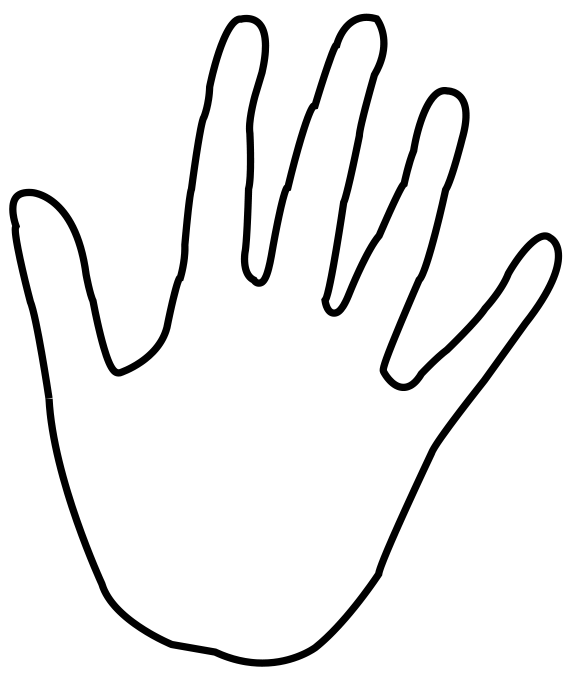

<ion-view view-title="Prompt Mode" class="my-background">
    <ion-nav-buttons>
        <button class="button button-icon icon back-arrow" ng-click="back()"></button>
    </ion-nav-buttons>

    <ion-nav-buttons side="secondary">
        <button class="button button-icon icon unlock" ng-click="logout()"></button>
    </ion-nav-buttons>
    <ion-content>

        <div class="cover">
            

        </div>
        <!---->
        <div class="row">
            <input type="button" name="know" value="יודע" class="button button-large button-positive"
                   ng-click="assignChoice($event)">
            <input type="button" name="lostconc" value="לא יודע כי לא הייתי מרוכז"
                   class="button button-large button-positive"
                   ng-click="assignChoice($event)">
        </div>
        <div class="row">
            <input type="button" name="readback" value="לא יודע וחוזר לקרוא" class="button button-large button-positive"
                   ng-click="assignChoice($event)">
            <input type="button" name="toodiff" value="לא הבנתי כי הטקסט היה קשה מדי"
                   class="button button-large button-positive"
                   ng-click="assignChoice($event)">
        </div>

    </ion-content>
</ion-view>
